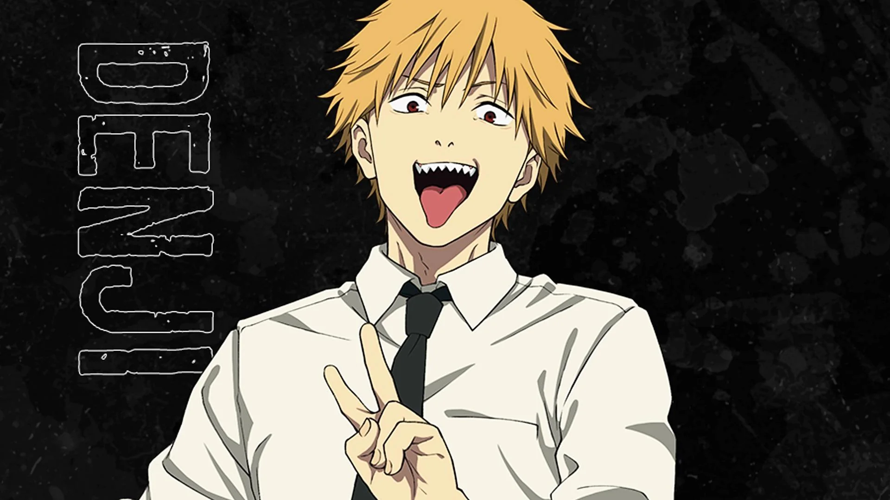
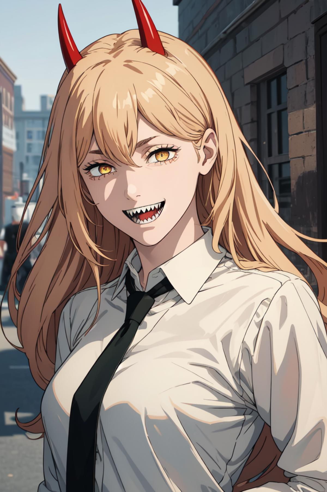
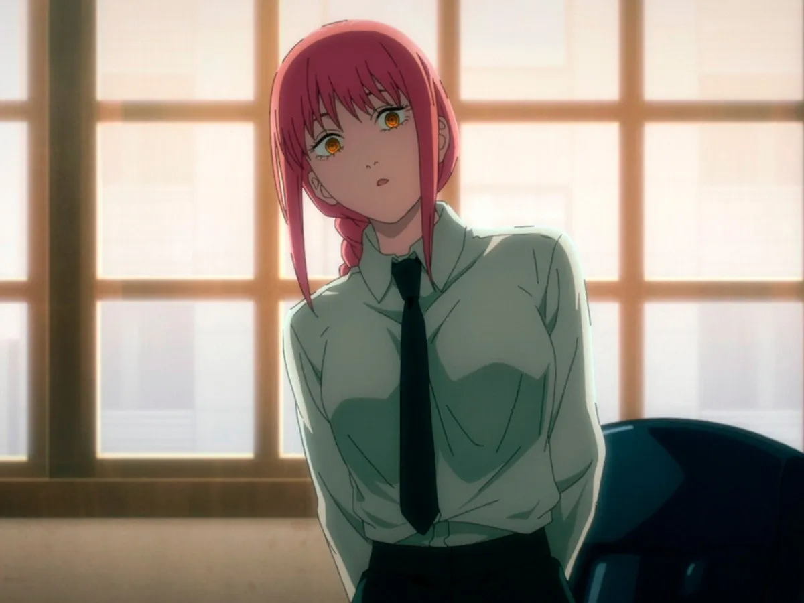
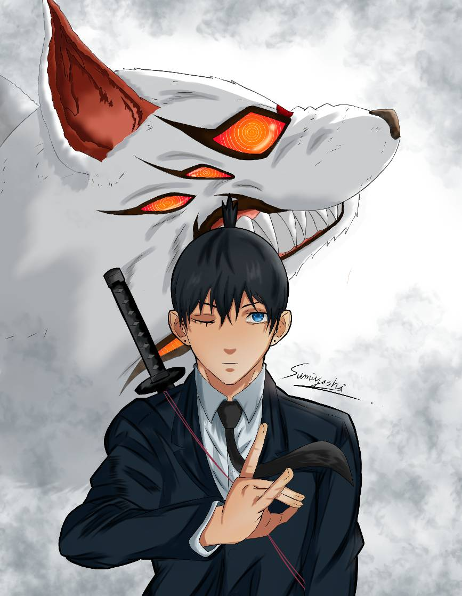
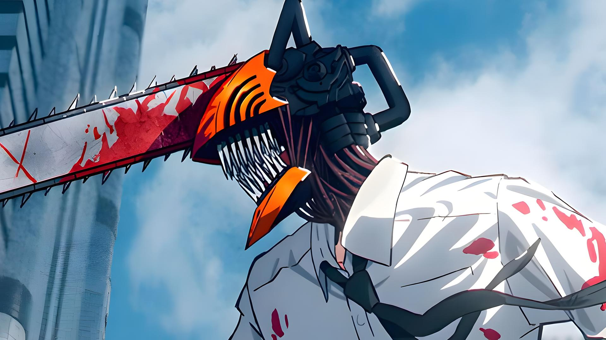
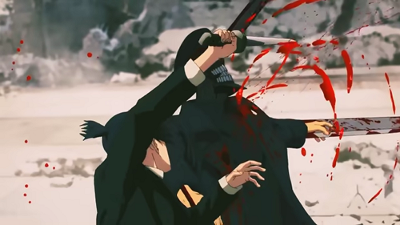

Personajes Principales

Denji
Protagonista principal, también conocido como Chainsaw Man

Power
Demonio de la Sangre y compañera de Denji

Makima
Líder de la División de Cazadores de Demonios

Aki
Cazador de demonios experimentado
Historia
Chainsaw Man sigue la historia de Denji, un joven que se fusiona con su demonio mascota Pochita para convertirse en Chainsaw Man. Ahora trabaja como cazador de demonios oficial mientras intenta vivir una vida normal.
A medida que avanza la trama, Denji se enfrenta a numerosos demonios, desarrollando relaciones complejas con otros cazadores y descubriendo oscuros secretos sobre el mundo que habita. Su búsqueda de una vida sencilla contrasta con los desafíos que enfrenta, mientras aprende sobre sacrificios, ambiciones y la verdadera naturaleza de la humanidad.
Galería de Momentos

La primera transformación de Denji, un momento épico que marca el inicio de su vida como Chainsaw Man. En este punto, Denji descubre el verdadero poder de su unión con Pochita, enfrentándose a hordas de demonios con brutalidad y determinación, mientras redefine su propósito en un mundo cruel.

El ataque del Demonio de Armas, una intensa batalla llena de estrategia y emociones. Durante este enfrentamiento, Denji demuestra su crecimiento como cazador y su habilidad para superar adversarios formidables, mientras lidia con las consecuencias personales y emocionales de la lucha.